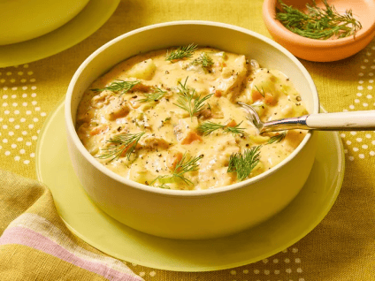

Salmon Chowder

Description
Rich! Creamy! And delicious! If you love fish you will love this!
Ingredients:
- 3 tablespoons butter
- ¾ cup chopped onion
- ½ cup chopped celery
- 1 teaspoon garlic powder
- 2 cups chicken broth
- 2 cups diced potatoes
- 2 carrots, diced
- 1 teaspoon salt
- 1 teaspoon ground black pepper
- 1 teaspoon dried dill weed
- 2(16 ounce) cans salon
- 1(15 ounce) can creamed corn
- 1(12 fluid ounce) can evaporated milk
- ½ pound Cheddar cheese, shredded
Steps:
- Gather the ingredients.
- Melt butter in a large pot over medium heat.
Add onion, celery, and garlic powder;
sauté until onions are tender.
- Add broth; stir in potatoes and carrots.
Season with salt, pepper, and dill.
Bring to a boil; reduce heat, cover, and simmer 20 minutes.
- Stir in salmon, corn, evaporated milk, and cheese.
Cook until heated through.